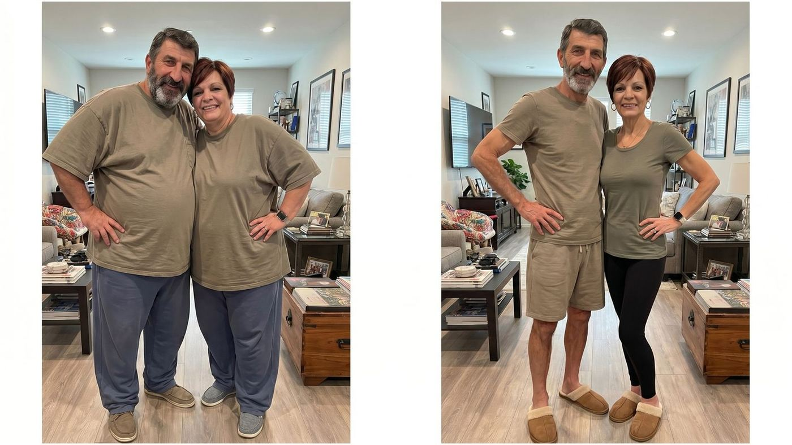
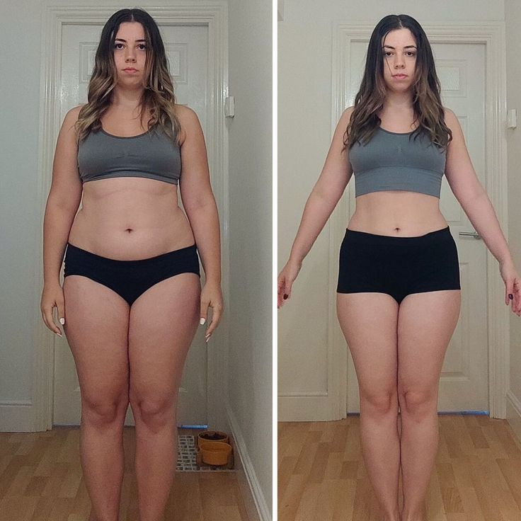
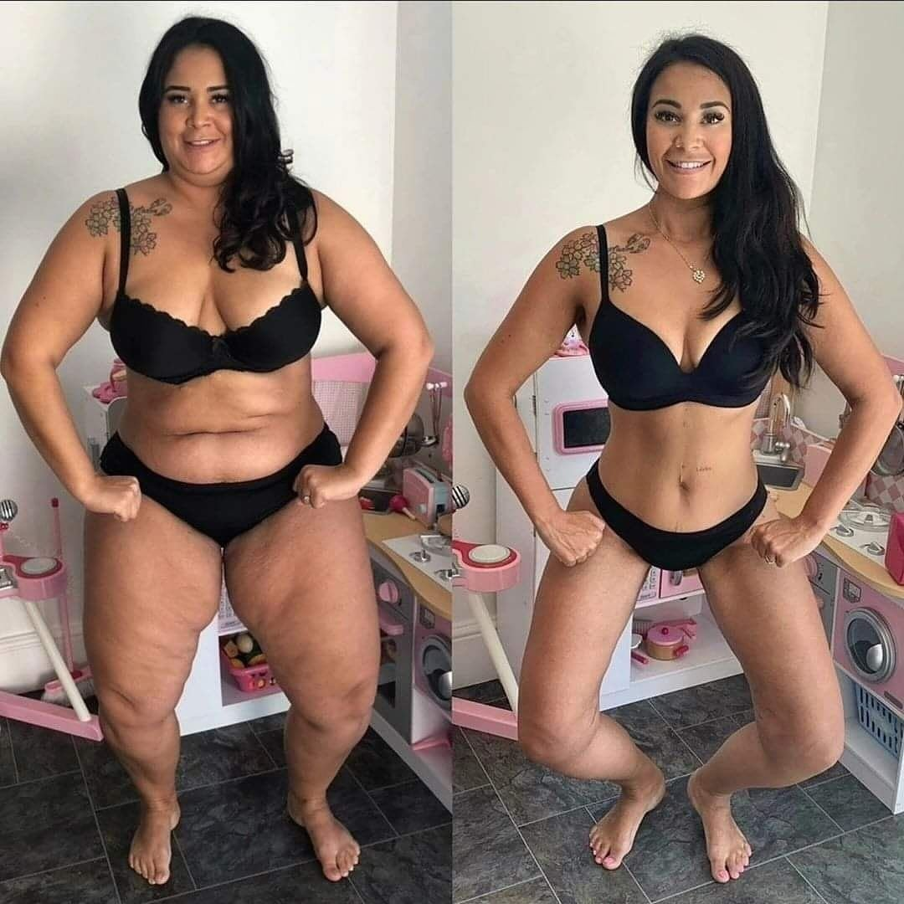
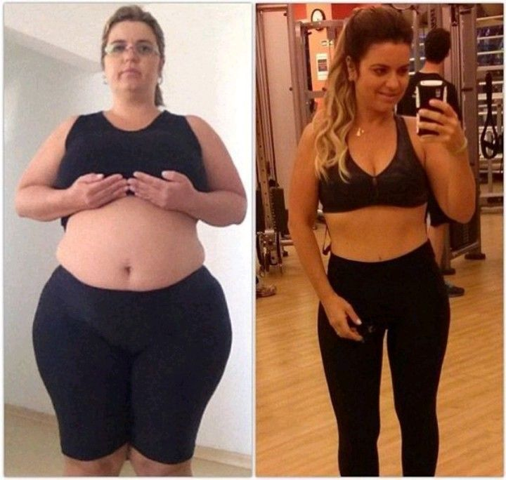

The Brazilian Amazonian Berry Erasing Cravings, Belly Fat & Afternoon Hunger Crashes In Just 21 Days — Without A Single Ozempic Shot
Whether you're trying to lose weight without ever touching Ozempic — or you're ON Ozempic right now and the nausea, the gaunt face and the dead-eyed fatigue have you Googling "how to quit safely" — read this before your next dose. A 4-ingredient Amazonian formula — wild açaí, green tea, garcinia and apple cider vinegar — is silencing afternoon cravings and melting belly fat on women 35+ in both groups. Endocrinologists are calling it "the first natural protocol that targets the appetite signaling Ozempic was supposed to fix — without the side effects that made you want out."

What started as a São Paulo cooperative secret is now quietly stocked at Beverly Hills longevity clinics — sold out three times this year at two upscale Manhattan pharmacies before official import shipments could refill the shelves.
Hollywood A-listers fly it in privately from Brazilian growers. Tech-CEO wives in Silicon Valley get it through concierge metabolic clinics. The same women who could afford $1,400/month Ozempic are increasingly choosing this 4-ingredient natural protocol starting at $79 instead — quietly, before friends and trainers notice.
You've been watching the Ozempic conversations from the outside.
You want to lose 15, 25, 40 pounds — but the idea of injecting yourself every Tuesday for the rest of your life makes your stomach turn. You've seen what it does to your friend's face. You want a real way out — natural, food-based, no needles, no prescription, no chemical lease.
You're already on Ozempic, Wegovy or Mounjaro — and you want out.
The nausea after every meal. The metallic taste. The "Ozempic face" staring back from the mirror. The 3pm dead-eyed fatigue that no coffee fixes. The fear that the moment you stop, the weight floods back worse than before. You're looking for an exit ramp that doesn't end in 20 lbs of rebound.
If you've ever stepped on the scale after a "clean" week and watched the number refuse to move, you are not alone — and you are not weak. More than 68% of American women over 35 report the same pattern: appetite that feels impossible to control by late afternoon, portion sizes that quietly climb, and weight that creeps up no matter how carefully they eat.
For decades the medical answer has been the same recycled line: eat less, move more. But a growing body of research into appetite regulation and post-35 metabolism suggests the problem isn't discipline at all. It's biology — and a food environment engineered to override it.
And at the center of a quiet shift in how U.S. women are approaching weight loss is a small purple berry from the Brazilian Amazon.
Why the $1,400/month Ozempic industry doesn't want you to read this
Here's a number GLP-1 manufacturers don't put in their TV commercials: 72% of women who start Ozempic, Wegovy or Mounjaro for weight loss quit within 12 months — and 1 in 4 develops gastroparesis (stomach paralysis), bone-density loss, or violent rebound hunger when they stop. The shots cost $850–$1,400 a month, and the moment you skip a week the cravings come back worse than before you started. That's not weight loss. That's a chemical lease on a body you don't get to keep.
And the part the prescribers quietly leave out of the consultation: "Ozempic face" — the gaunt, hollowed-out look from rapid lean-mass loss. Loose, sagging skin on the arms and abdomen. Heart-rate spikes. Pancreatitis warnings on the FDA label. A 2024 cohort study tracked GLP-1 users for 24 months and found that among those who stopped, 67% regained more weight than they had originally lost. The shot doesn't fix the appetite signaling — it overrides it. The moment the override stops, the body comes back angrier.
This is the math the pharma industry quietly bills as "the cost of modern weight loss." Most women — even the ones with the prescription approved — only realize what they've signed up for when the first month-long withdrawal hunger hits.
"I was on Wegovy for 9 months. The nausea won. So did the mirror."
Rebecca, 44, from Charlotte, started Wegovy in 2024 after her doctor flagged her A1C trending toward pre-diabetes. The first 4 months were a honeymoon — the cravings vanished, the scale moved 18 pounds. Then the side effects she'd brushed off in the brochure stopped being a side note. Vomiting twice a week. A flat, hollowed-out face her sister kept commenting on. Energy so low she canceled her son's birthday hike. When she asked her doctor for a tapering plan, the answer was a shrug — "most patients just stop." She stopped. Within 11 weeks she'd regained 22 pounds, plus 4 more her body decided to keep as insurance.
Rebecca's pattern is now so common that the term "GLP-1 rebound profile" is showing up in clinical notes — women between 38 and 55 who lost weight fast on the shot, came off because of side effects, regained more than they started with, and are now looking for a signaling-based approach that doesn't depend on weekly chemistry. The Brazilian protocol below was built precisely for that profile — gentle on the stomach, food-based, designed to coax leptin sensitivity back online instead of overriding it.
Why the $72 billion diet industry doesn't want you to know this either
Here's something the American weight-loss industry won't tell you: there's no patent on a jungle fruit. Big Pharma can't sell you a monthly injection made of açaí. The diet industry can't bottle it up behind a subscription app. And the supplement conglomerates that own 80% of U.S. weight-loss retail shelves don't import wild Amazonian berries — they import cheap Chinese green-tea extract and mark it up 700%.
That's why for over two decades, the simplest, cheapest, and most natural appetite-regulation tool ever documented — one that indigenous Brazilian women have relied on since the 1600s — has been systematically ignored by American medicine. There was no money in telling you about it.
Until a handful of small U.S. brands started importing the wild-harvested berry directly from Pará and bottling it — and women over 35 started noticing what four hundred years of Ribeirinho women already knew.
Why "eating less" stops working after 35
Between the ages of 35 and 55, women lose an average of 5% of their resting metabolism every decade. Add falling estrogen, rising cortisol, and blood-sugar swings triggered by the modern diet, and the result is predictable: an appetite system that no longer tells you when you're full — and a body that stores fat faster than it burns it.
This is why so many women describe the same loop: they eat a "normal" breakfast, feel starving by 11 a.m., power through lunch, hit an afternoon crash, snack to survive it, and end the day having eaten 400–600 calories more than they planned. The weight doesn't come from one big meal. It comes from an appetite signaling system that's been quietly broken.
Yale endocrinologist Dr. Alan Steinberg calls it "a perfectly engineered physiological ambush" — one that hijacks dopamine, spikes insulin, and leaves the body hungrier than it was an hour earlier.
The Amazonian discovery: a fruit that turns appetite off
In 2023, a field study in Pará, northern Brazil, caught international attention. Indigenous Ribeirinho women — whose traditional diet is heavily centered on a single superfruit — showed significantly lower rates of obesity, emotional eating, and adult-onset weight gain than lowland populations of similar age and income.
The superfruit was açaí (pronounced ah-sigh-EE). What researchers found inside it was unexpected: one of the densest natural concentrations of anthocyanins, polyphenols, and plant fiber ever measured — a trio now linked in multiple studies to leptin sensitivity (the hormone that tells your brain you're full) and insulin response (the hormone that decides whether you burn or store food).
In other words: the berry appears to quietly restore the two signals that a post-35 body has stopped producing properly. When those signals work, appetite drops. When appetite drops, weight loss follows — without dieting, calorie counting, or willpower.
Why wild Amazonian açaí is different
The açaí sold as bowls or frozen pulp in American grocery stores is heavily processed, pasteurized, and commonly mixed with sugar. Wild-harvested berries from the Amazon floodplains retain up to 30× more polyphenols — the exact compounds researchers believe interact with appetite and fat-storage signaling.
When paired with three other well-studied weight-loss ingredients — Green Tea extract (thermogenic metabolism boost), Garcinia Cambogia (blocks fat storage), and raw Apple Cider Vinegar (stabilizes blood sugar) — the four ingredients attack all four failure points of the modern weight-loss attempt at once: uncontrolled appetite, slow metabolism, stubborn fat storage, and afternoon energy crashes.
| Comparison | GLP-1 Injectables (Ozempic / Wegovy) |
Diet Pills / Stimulants (Caffeine-based) |
Crave-Off (Amazonian Formula) |
|---|---|---|---|
| Approach | Hormone mimic | Stimulant suppression | Natural signaling support |
| Onset | 2–4 weeks | 1–2 hours (then crash) | Noticeable within 7–14 days |
| Side effects | Nausea · fatigue · GI issues | Jitters · BP spikes · anxiety | None commonly reported |
| Prescription | YES (expensive) | Sometimes | NO (100% legal) |
| Sustainable | Weight returns when stopped | Rebound weight gain | Resets signaling naturally |
| Monthly cost | $900–$1,200 | $40–$70 | $33–$39 / bottle |
Why most weight-loss supplements fail women over 35
Most supplements attack only one failure point. That's why the average user quits within 3 weeks.
✕ Generic Weight-Loss Supplements
- Synthetic stimulants (caffeine anhydrous, yohimbine)
- Processed, low-potency ingredients
- Target only one failure point (usually metabolism)
- Cause jitters, anxiety, sleep disruption
- Rebound weight gain when you stop
- No connection to traditional food research
- Typically abandoned within 3 weeks
✓ Crave-Off Formula
- 100% plant-based — wild Amazonian açaí core
- Wild-harvested berries · 30× more polyphenols
- Attacks all 4 failure points at once
- Zero stimulants · no jitters · no crash
- Supports natural signaling — resets gradually
- Rooted in 400+ years of Ribeirinho tradition
- 60-day risk-free trial to see what responds
Fight your body
Calorie restriction, extreme discipline, and willpower-based approaches fight against the body's appetite-signaling system. The hormones win. The weight returns.
Reset the signaling
The 4-ingredient blend works with your leptin, insulin, and satiety pathways — rebalancing the system so appetite quiets on its own, without willpower.
"I stopped being hungry — and the weight just came off"
One story that circulated widely on social media last month came from Rachel M., 43, a mother of two from Austin, Texas. After two failed rounds of injectable weight-loss medication — both of which left her nauseous and exhausted — she describes turning to a simple plant-based capsule routine "out of pure frustration."
"I wasn't looking for a miracle," she told us. "I just wanted to stop thinking about food every 20 minutes. Within about ten days, the hunger between meals quieted down. I lost 11 pounds in the first month without counting a single calorie. Another 14 in the second month. That's 25 pounds in two months — and I wasn't dieting. I was just… not hungry all the time."
Rachel's story isn't unusual — similar submissions have been coming in from across the country.
Linda D., 52, from Cincinnati, Ohio, sent us this note two months ago: "I hadn't worn a real dress in eight years. Not since my youngest graduated. I kept telling myself it was fine, that it didn't matter. It did matter. Around week five, I noticed my jeans were loose. By week nine I bought a dress. I cried in the fitting room. Some individuals may respond differently, but for me it was the first thing that actually worked after menopause."
And Michelle R., 47, a nurse from Savannah, Georgia, told us she had quietly stopped showing up in family photos. "I'd volunteer to take the picture. Every time. My kids didn't say anything but I know they noticed." Three months into the protocol, she described feeling "like the volume knob on the hunger in my head had been turned down. I wasn't eating through stress anymore. That was the biggest shift — not the scale, the quiet."
Reader submissions like these — mostly women 40 to 60, who describe having "tried everything" — have been arriving at a rate health editors say they haven't seen since the ozempic coverage peaked in 2023.

How to know if it will work for your body
Because the formula targets four distinct weight-loss pathways, not every woman responds to it the same way. Nutrition researchers developed a short self-assessment — 6 questions, about 30 seconds — that maps a user's appetite and metabolism profile against the responder patterns seen in the Brazilian field data.
The assessment is free and anonymous. At the end, readers receive a personalized summary indicating whether their profile matches the group most likely to experience meaningful appetite reduction and weight loss from the four-ingredient formula.
Who responds best
From the early U.S. data, four groups emerged as the strongest responders:
— Women over 35 whose usual diet has stopped producing results
— Anyone who feels hungry or thinks about food multiple times a day
— Those carrying stubborn belly or hip fat despite exercise
— Women who want to lose weight without counting calories or cutting food groups

A quiet shift in American weight loss
Since the end of 2025, sales of açaí-based appetite and weight-loss formulas have risen sharply in the U.S. market. The growth is concentrated in the exact demographic the Brazilian field study pointed to: women 35–60 who have "tried everything" and are now gravitating toward simpler, food-based supplements over pharmaceutical injections.
The formula most often cited in reader submissions is a Brazilian-made blend sold under the name Crave-Off, which combines wild Amazonian açaí with the three other ingredients mentioned in the field research. At the time of writing, the brand's current U.S. batch is reportedly running low, and the company confirmed a waiting list had been opened earlier this month.
Readers curious about whether their appetite and weight-loss profile matches the responder group can take the free quiz below.
Diana L., 48, from Phoenix, Arizona, agreed to document her first 30 days after being matched to the responder profile. She had tried — by her own count — "ten different diets, two gym memberships, and one round of injectable medication" in the previous six years. None had lasted more than a month.
The first thing Diana noticed wasn't the scale. It was the afternoon. "I always hit a wall around 3 p.m. I'd go for coffee or a bag of almonds. By day three I realized I just… didn't. I kept working. I looked at the clock and it was 4:45. That hadn't happened in years."
"The cravings for sweets at night quieted down. I used to have ice cream four or five nights a week. I'd just skip it because I wasn't thinking about it. Not willpower — absence. It was the strangest feeling."
Diana's jeans started feeling looser. She hadn't weighed herself — intentionally. "I didn't want the number to mess with my head." Instead, she noticed the button on her work pants closed without her pulling it in. "I sat at my desk and almost cried."
She finally stepped on the scale. "Down 9 pounds. No calorie counting. No workout I wouldn't have done anyway. Just a body that had finally stopped fighting me." Some individuals may experience results at a different pace — but Diana's pattern tracks closely with what the Brazilian field-study data predicted for her profile.
More women, more profiles, same pattern


Real before-and-after submissions from readers
Photos shared by readers after completing a 60- or 90-day profile-matched protocol. These images were submitted voluntarily and may not reflect typical results.

⚠️ Warning: The Weight-Loss Industry Is Fighting To Stop This
Reports confirm that several major pharmaceutical and diet-industry lobbying groups have been actively pressuring regulators to restrict access to the wild Amazonian açaí and polyphenol-based formulas threatening their $72 billion-a-year weight-loss market. Injectable GLP-1 drugs and appointment-based diet programs stand to lose billions if American women learn they can get comparable appetite regulation from a shelf-stable plant supplement.
At the time of writing, Crave-Off is still legally sold online, no prescription required, and shipped directly from its U.S. facility. But unlike stimulant-based competitors, the current batch is tied to a seasonal wild harvest — once this shipment is out, the next import cycle is 90+ days away.
Secure My Profile-Matched Bottle »Reserve Your Profile-Matched Bottle Before This Batch Runs Out
Take the free 30-second assessment now. Your profile-matched plan stays held only while you're on this page. Once inventory drops below 40 bottles, the company has historically opened the waitlist — adding weeks to ship times.
Reserve My Free Profile Match »